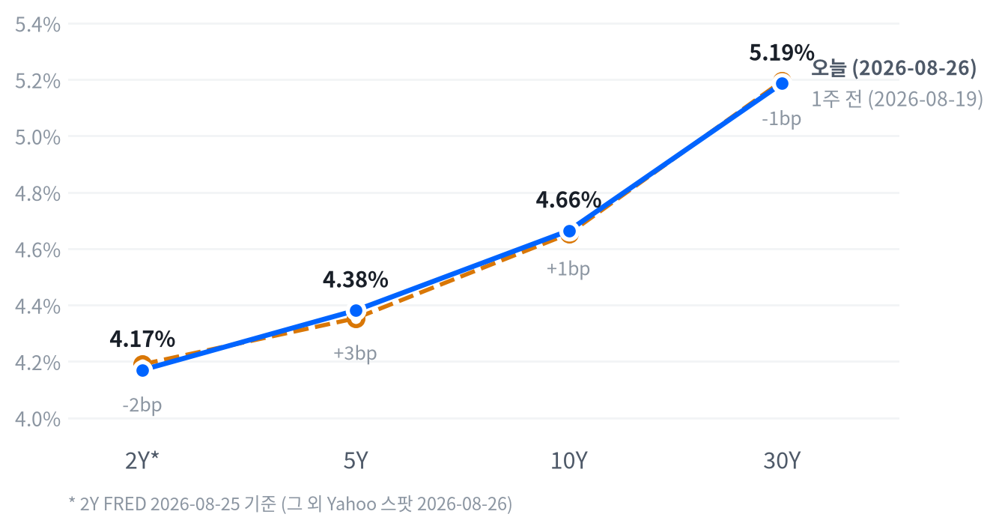

S&P500은 -0.02%, 나스닥은 -0.08%로 사실상 보합 마감했습니다. 장중에는 정오 무렵 저점을 찍은 뒤 오후 내내 낙폭을 되돌리는 흐름이 지수 전반에서 반복됐습니다.
웨스턴디지털(+4.02%)·시게이트(+3.01%)·루멘텀(+6.04%) 등 스토리지·AI인프라 개별주만 크게 뛰었고, 엔비디아는 실적 발표를 하루 앞두고 -1.59% 밀렸습니다.
오늘의 행동. 2~6주 시계에서 메모리 상대비중을 중립에서 비중확대로 한 단계 올리고, 그 밖의 포지션은 그대로 유지합니다. 20일 초과수익이 8.15%p로 확대 조건(5.0%p)을 넘어섰고, 웨스턴디지털·시게이트 동반 강세가 이를 뒷받침합니다.
왜 지금인가. AI 데이터센터 투자가 계속 늘면서 메모리 수요는 경기 흐름과 따로 움직이는 축으로 자리를 잡았습니다. 오늘 성장 국면 판정이 교착에서 냉각으로 넘어갔는데도 메모리만 예외적으로 강세를 이어간다는 점이 그 근거입니다.
무효화 조건. 20일 초과수익이 다시 0%p 아래로 꺾이거나 낸드·D램 가격이 하락 전환하면 이번 확대 판단을 철회합니다. 채권·주식·FX·원자재는 사전에 걸어둔 조건이 아직 충족되지 않아 그대로 유지합니다.
| 지수 | 종가 | 등락 | 등락률 |
|---|---|---|---|
| S&P 500 Value | 237.86 | +0.41 | +0.17% |
| S&P 500 | 7,675.70 | -1.58 | -0.02% |
| Nasdaq | 26,130.20 | -21.10 | -0.08% |
| Russell 2000 | 3,005.90 | -4.12 | -0.14% |
| S&P 500 Growth | 138.61 | -0.19 | -0.14% |
| Dow | 53,463.88 | -113.52 | -0.21% |
| 섹터 | 등락률 |
|---|---|
| Industrials | +1.09% |
| Technology | +0.61% |
| Energy | +0.60% |
| Utilities | +0.46% |
| Materials | +0.17% |
| Financials | -0.09% |
| Consumer Staples | -0.29% |
| Communication Services | -0.50% |
| Real Estate | -0.60% |
| Consumer Discretionary | -0.67% |
| Health Care | -1.00% |
장중 흐름. 나스닥은 개장가(26,100) 대비 오전 내내 밀렸습니다. 정오 무렵(12:30 ET) 저점(26,022, 시가 대비 -0.30%)을 찍은 뒤 오후 들어 반등이 이어져 15:00 고점(26,189, 시가 대비 +0.34%)까지 올랐다가 막판 소폭 되밀리며 마감했습니다.
S&P500도 같은 패턴을 그렸습니다. 12:30 ET 저점(시가 대비 -0.12%)을 찍은 뒤 15:00 고점(시가 대비 +0.31%)까지 반등해, 두 지수 모두 정오 저점·오후 고점의 궤적을 공유했습니다.
러셀2000만 결이 달랐습니다. 개장 직후인 09:30~10:00 사이에 고점을 먼저 찍은 뒤 오후 들어 힘을 잃었습니다. 결국 -0.14%로 소형주가 대형주 반등에서 소외된 하루였습니다.
이 오후 반등은 엔비디아 실적 발표를 하루 앞두고 반도체 업종에 매수세가 몰린 영향이 컸다고 알려집니다. 국채 금리가 이틀 연속 내린 점도 투자심리를 눌러주는 요인으로 거론됩니다.
전략 해석. 종가만 보면 세 지수 모두 보합권이지만 속을 들여다보면 산업재·기술·에너지가 오르고 헬스케어·임의소비재·통신서비스가 빠지는 뚜렷한 순환매 장세였습니다. 가치주 지수(+0.17%)가 성장주 지수(-0.14%)를 웃돌아, 오늘 하루만큼은 대형 성장주보다 경기민감·가치주 쪽에 자금이 더 실렸습니다.
메모리·스토리지·AI인프라 종목군의 초과 상승이 지수 전체의 흐름을 사실상 가려버렸다는 점도 눈에 띕니다. 이 구도는 아래 포지션 섹션의 메모리 비중확대 전환과 맞물리는 흐름이라, 지수 자체보다 종목 선별이 성과를 가르는 구간으로 봅니다.
| 만기 | 종가 | 전일比(bp) | 1주 전 | 주간 변화(bp) |
|---|---|---|---|---|
| 2Y* | 4.17% | -7.0bp | 4.19% | -2.0bp |
| 5Y | 4.381% | +3.0bp | 4.353% | +2.8bp |
| 10Y | 4.664% | +2.5bp | 4.653% | +1.1bp |
| 30Y | 5.186% | +1.2bp | 5.194% | -0.8bp |

2s10s 스프레드는 49.4bp입니다(2Y는 FRED 2026-08-25, 10Y는 Yahoo 2026-08-26 기준을 섞은 값). 두 다리의 기준일을 맞춘 동일자 FRED 기준으로는 47.0bp로, 두 값의 차이(2.4bp)는 5bp 문턱에 못 미쳐 날짜 불일치가 만든 왜곡은 크지 않습니다.
같은 날짜로 비교할 수 있는 5년물과 30년물의 차이(5s30s)는 80.5bp입니다. 오늘 하루로 보면 5년물(+3.0bp)이 10년물(+2.5bp)과 30년물(+1.2bp)보다 더 올라, 만기가 길수록 상승폭이 작아지는 벨리 약세 주도 장세였습니다. 다만 2년물의 하루 변화(-7.0bp)는 기준일 자체가 다른 구간이라 이 장중 흐름 판정에 그대로 엮을 수 없습니다.
주간(1주 전 대비) 기준으로 보면 2년물(-2.0bp)과 30년물(-0.8bp)은 내리고 5년물(+2.8bp)·10년물(+1.1bp)은 올랐습니다. 단순히 장단기 금리차가 확대됐다거나 축소됐다고 규정하기 어려운, 중간 만기만 도드라진 낙타등 모양의 되돌림입니다. 2s10s로 보는 장단기 금리차는 한 주 전보다 소폭 좁혀진 셈입니다.
금리를 움직인 힘. 명목금리는 실질금리에 기대인플레(시장이 보는 향후 물가상승률 전망)를 더한 값으로 쪼갤 수 있습니다. FRED 동일자(2026-08-25) 기준으로 10년물의 하루 변화(-6bp)는 실질금리(-6bp)가 전부 설명했고 기대인플레는 보합이었습니다. 5년물의 하루 변화(-6bp)도 실질금리(-5bp)가 대부분을 차지했습니다.
표에 있는 Yahoo 스팟 기준 10년물의 하루 변화(+2.5bp, 2026-08-26)는 이 FRED 기준 수치와 비교 대상일이 다르다는 점을 짚어둡니다. 리서치 노트는 국채금리 이틀 연속 하락의 배경으로 유가 하락에 따라 물가 우려가 누그러진 점을 꼽았지만, 정작 기대인플레는 보합이라 이 설명과는 결이 다릅니다.
실질금리 하락의 정확한 방아쇠는 확인되지 않았습니다. 다만 기간프리미엄(만기가 길수록 더 얹어 받는 보상)이 오히려 2bp 오른 점(2026-08-21 기준)을 보면, 수급 불안보다는 향후 정책금리 경로 재산정 쪽에 무게가 실립니다.
신용시장은 차분합니다. 하이일드 스프레드는 2.70%로 한 주 새 5bp 좁혀졌고, 투자등급 스프레드도 0.81%로 안정적입니다(둘 다 2026-08-25 기준). 5년 후 5년 기대인플레도 2.33%로 하루 변화가 없어, 장기 물가 기대는 잘 붙들려 있습니다.
듀레이션 전략. 채권 포지션은 숏 바이어스·5년물 중심 보유를 그대로 유지합니다. 30년물이 5.05% 밑으로 내려가야 축소를 검토하는데 오늘 종가(5.186%)는 아직 그 문턱 위에 있습니다.
| 통화 | 종가 | 등락 | 등락률 |
|---|---|---|---|
| DXY | 99.13 | +0.21 | +0.22% |
| USD/KRW | 1,384.58 | +3.09 | +0.22% |
| USD/JPY | 159.24 | +0.02 | +0.01% |
| EUR/USD | 1.1658 | -0.0017 | -0.15% |
장중 흐름. USD/JPY는 아시아 세션인 새벽 03:00 ET 저점(158.875)까지 밀렸다가 뉴욕 세션 내내 되올랐습니다. 15:00 ET 고점(159.444) 부근에서 마감해, 달러 강세가 하루 종일 서서히 힘을 받은 모습입니다.
DXY도 하루 종일 +0.22% 올라 99.13을 기록했습니다. 국채 금리가 실질금리 주도로 내렸는데도 달러가 강했던 점은, 유가·원자재 약세 속 안전자산 수요가 달러 쪽으로도 일부 쏠렸을 가능성을 시사합니다.
전략 해석. 오늘 하루는 달러가 반등했지만, 20일 흐름(-1.65%)으로 보면 여전히 완만한 약세 추세 안에 있습니다. §9 포지션은 달러 소폭 숏을 그대로 유지하며, DXY가 101을 웃돌면 이 판단을 축소 검토합니다.
| 품목 | 종가 | 등락 | 등락률 |
|---|---|---|---|
| Natural Gas | $2.905 | +0.135 | +4.87% |
| Gold | $4,662.90 | +24.80 | +0.53% |
| WTI | $81.84 | -0.52 | -0.63% |
| Brent | $86.60 | -1.98 | -2.24% |
장중 흐름. WTI는 새벽 05:00 ET 저점(79.62달러, 시가 대비 -0.82%)에서 정오 고점(83.31달러, 시가 대비 +3.77%)까지 크게 출렁였습니다. 종가(81.84달러)는 고점에서 다시 내려온 자리입니다.
금도 새벽 01:30 ET 고점(4,706달러)을 찍은 뒤 오전 11:00 ET 저점(4,638달러, 시가 대비 -1.31%)까지 밀렸습니다. 이후 낙폭을 일부 되돌리며, 전일 종가 대비로는 +0.53% 오른 자리에서 마감했습니다.
전략 해석. 원유는 지정학 프리미엄이 사실상 빠진 채라 §9 포지션은 중립을 유지합니다. 금은 실질금리 하락 기대와 달러 약세라는 두 힘을 동시에 타는 자산이라, 오늘 같은 달러 반등에도 상승세를 지켰습니다.
성장 쪽 흐름이 한 단계 꺾이며 국면이 냉각으로 이동합니다. 여드레(8영업일) 동안 이어지던 교착 국면에서 벗어난 것은, 오늘 새로 들어온 개인소비지출(PCE)과 내구재 주문 발표가 성장 쪽 점수를 밀어냈기 때문입니다.
성장 쪽 점수는 -0.377로 내려와 처음으로 뚜렷하게 둔화 구간에 들어섰습니다. 내구재 주문은 헤드라인에서는 컨센서스(시장의 평균 전망치)를 웃돌았지만, 항공기 주문발 반등을 걷어내면 사실상 정체 수준입니다. 그래서 흐름 판정은 뚜렷한 악화로 나왔고, 이것이 활동 쪽 점수를 끌어내려 성장 쪽 전체를 밀었습니다.
물가 쪽 점수는 -0.327로, 둔화 쪽으로 넘어가는 경계에 바짝 붙어 있지만 아직 그 경계를 넘지는 않아 교착을 유지합니다. PCE·근원 PCE가 나란히 완만한 재가속을 보였는데도 물가 축이 교착에 머무는 이유입니다. 성장축 -0.377 · 인플레축 -0.327
고용은 개선 쪽입니다. 일곱 개 지표 가운데 다섯 개가 좋아졌습니다. 신규 실업수당 청구 4주 평균이 20만4천 건으로 가장 뚜렷하게 개선 방향을 이끌었습니다(전주 19만9,750건). 구인건수(JOLTS)도 736만 건으로 완만하게 같은 방향을 가리켰지만(전월 754만 건), 시간당 임금은 전월비 0.05%로 올라 오름폭 자체는 완만하게 약해졌습니다(전월 0.29%). 고용축 +0.398
| 지표 | Actual | Forecast | Previous | 발표일 | 추세 | 판정 |
|---|---|---|---|---|---|---|
| 구인건수(JOLTS) | 736만 건 | – | 754만 건 | 2026-06 | 개선(완만) | – |
| 신규 실업수당 청구 | 20.6만 건 | – | 21.2만 건 | 2026-08-15 주간 | 개선(미미) | – |
| 신규 청구 4주 평균 | 20.4만 건 | – | 20.0만 건 | 2026-08-15 주간 | 개선(뚜렷) | – |
| 계속 실업수당 청구 | 179.9만 건 | – | 178.1만 건 | 2026-08-08 주간 | 개선(완만) | – |
| 비농업 고용(증감) | -2.3만 명 | – | +2.0만 명 | 2026-07 | 악화(완만) | – |
| 실업률 | 4.1% | – | 4.2% | 2026-07 | 개선(미미) | – |
| 시간당 임금(MoM) | 0.05% | – | 0.29% | 2026-07 | 악화(완만) | – |
생산·활동은 악화 쪽입니다. 다섯 개 지표 가운데 넷이 나빠졌습니다. 내구재 주문이 흐름 판정에서 가장 뚜렷하게 나빠졌고(전월비 +1.07%, 전월 +0.54%), 산업생산도 전월비 +0.2%로 완만하게 힘이 빠졌습니다(전월 +0.27%). 기존주택 판매는 406만 채로 완만하게 개선돼(전월 413만 채) 다른 지표들과 반대 방향을 가리켰습니다. 활동축 -0.362
| 지표 | Actual | Forecast | Previous | 발표일 | 추세 | 판정 |
|---|---|---|---|---|---|---|
| 산업생산(MoM) | 0.20% | – | 0.27% | 2026-07 | 악화(완만) | – |
| 내구재 주문(MoM) | 1.07% | 0.6%대 | 0.54% | 2026-08-26 | 악화(뚜렷) | 상회▲ |
| 신규주택 판매 | 60.7만 채 | – | 67.8만 채 | 2026-07 | 보합(미미) | – |
| 기존주택 판매 | 406.0만 채 | – | 413.0만 채 | 2026-07 | 개선(완만) | – |
| 실질GDP 성장률(QoQ, 연율) | 1.5% | – | 2.1% | 2026-Q2 | 보합(미미) | – |
| 필라델피아 연은 제조업지수 | 47.4 | 24.1 | 41.4 | 2026-08-20 | – | 상회▲ |
| S&P Global 제조업 PMI(속보) | 53.2 | 53.9 | 53.9 | 2026-08-21 | – | 하회▼ |
무엇이 나왔나. 미 상무부 센서스국(Census)에 따르면 7월 내구재 신규주문은 전월비 +1.07%(원문 표기 +1.1%) 늘어난 3,393억 달러(339.3bn)를 기록했습니다. 전월(6월)은 +0.5%였습니다. 헤드라인은 컨센서스(0.6%대)를 크게 웃돌았습니다.
무엇이 그것을 만들었나. 원문은 "운송장비가 두 달 연속 감소 이후 반등하며 26억 달러(2.3%) 늘어난 1,162억 달러로 증가를 이끌었다"고 밝힙니다. 운송장비를 뺀 주문은 +0.4%에 그쳤고, 그중에서도 비국방 항공기 신규주문이 +12.7%로 헤드라인을 사실상 혼자 밀어 올렸다는 게 원문의 설명입니다.
설비투자 대리 지표로 흔히 쓰이는 비국방 자본재(항공기 제외) 신규주문은 +0.2%로 사실상 정체였습니다. 전월(6월) 수치도 소폭 상향 수정됐을 뿐 큰 변화는 없었습니다.
그래서 어떻게 볼 것인가. 헤드라인 서프라이즈의 대부분은 변동성이 큰 항공기 주문 한 항목에서 나왔고, 설비투자와 더 가까운 항공기 제외 자본재 주문은 사실상 멈춰 있습니다. 그래서 이번 발표를 제조업 설비투자의 가격 흐름의 힘이 뚜렷이 개선됐다는 신호로 보기는 이릅니다. 활동 쪽 축이 흐름 판정에서 뚜렷한 악화로 나온 배경과도 맞아떨어집니다.
소비는 뚜렷하게 악화됐습니다. 두 지표 모두 나빠졌습니다. 소매판매가 전월비 -0.58%로 꺾여(전월 +0.25%) 가장 뚜렷한 하방 신호를 냈고, 미시간대 소비자심리도 흐름 판정에서 뚜렷한 악화로 나타났습니다(49.5, 전월 44.8). 두 지표가 같은 방향을 가리켜 이 축에서는 상충이 없습니다. 소비축 -1.168
| 지표 | Actual | Forecast | Previous | 발표일 | 추세 | 판정 |
|---|---|---|---|---|---|---|
| 소매판매(MoM) | -0.58% | – | 0.25% | 2026-07 | 악화(뚜렷) | – |
| 미시간대 소비자심리 | 49.5 | – | 44.8 | 2026-06 | 악화(뚜렷) | – |
| 컨퍼런스보드 소비자신뢰지수 | 89.4 | 90.2 | 90.2 | 2026-08-25 | – | 하회▼ |
물가는 완만하게 둔화 쪽입니다. 여덟 개 지표 가운데 셋만 뚜렷하게 둔화 신호를 냈습니다. 소비자물가 전월비가 0.07%로 가장 뚜렷하게 둔화됐고(전월 -0.42%), 생산자물가도 -0.03%로 같은 방향입니다(전월 -0.11%). 다만 미시간대 1년 기대인플레(시장이 보는 향후 물가상승률)는 흐름 판정에서 뚜렷한 재가속으로 나타나(4.6%, 전월 4.8%) 물가 축 안에서도 신호가 엇갈립니다. 물가축 -0.327
| 지표 | Actual | Forecast | Previous | 발표일 | 추세 | 판정 |
|---|---|---|---|---|---|---|
| 소비자물가(YoY) | 3.54% | – | 3.73% | 2026-07 | 재가속(완만) | – |
| 소비자물가(MoM) | 0.07% | – | -0.42% | 2026-07 | 둔화(뚜렷) | – |
| 근원 소비자물가(YoY) | 2.79% | – | 2.81% | 2026-07 | 교착(미미) | – |
| 근원 소비자물가(MoM) | 0.22% | – | -0.02% | 2026-07 | 둔화(완만) | – |
| 생산자물가(MoM) | -0.03% | – | -0.11% | 2026-07 | 둔화(뚜렷) | – |
| PCE 물가지수(YoY) | 3.7% | 3.6% | 3.72% | 2026-08-26 | 재가속(완만) | 상회▲ |
| 근원 PCE(YoY) | 3.34% | 3.3% | 3.34% | 2026-08-26 | 재가속(미미) | 부합= |
| 미시간대 1년 기대인플레 | 4.6% | – | 4.8% | 2026-06 | 재가속(뚜렷) | – |
무엇이 나왔나. 미 상무부 경제분석국(BEA)이 발표한 7월 PCE 물가지수는 전년비 3.7%(전월 3.72%)로 컨센서스(시장의 평균 전망치) 3.60%를 웃돌았습니다. 근원 PCE는 전년비 3.34%로 전월과 같았고 컨센서스(3.3%)에도 대체로 부합했습니다.
무엇이 그것을 만들었나. 2차 보도로 확인한 세부 구성을 보면 개인소득은 1,151억 달러(+0.4% MoM) 늘었고, 서비스 지출(+862억 달러)이 재화 지출 감소(-499억 달러)를 상쇄했습니다. 재화 가격은 전월비 -0.1%(가솔린 등 에너지 관련 재화가 -2.7%로 주도), 서비스 가격은 +0.3%로 서비스 우위 구도가 이어졌다는 게 2차 보도의 설명입니다.
FRED 원계열로도 방향은 같습니다. 실질 개인소비는 전월비 +0.008%로 사실상 정체했고, 내구재 소비지출은 -1.023%로 줄었습니다(둘 다 2026-07 기준월). 서비스 지출(PCESV) 시리즈는 +1.734%로 나오지만, 이 시리즈의 최신 갱신 기준월이 2026-04로 이번 발표보다 뒤처져 있어 참고용으로만 덧붙입니다.
그래서 어떻게 볼 것인가. 헤드라인 서프라이즈에도 국채 금리가 오히려 낮아졌습니다. 근원 물가가 전월과 같은 수준에서 멈췄다는 점에서, 시장이 이번 발표를 "정책 경로를 바꿀 정도는 아니다"로 받아들였을 가능성을 시사합니다. 다만 서비스 물가 우위 구조가 이어지는 한 정책 완화의 명분은 여전히 제한적이며, 이번 발표는 물가 축이 교착 경계에 바짝 붙어 있으면서도 완전히 넘어가지 못한 근거이기도 합니다.
연준은 9월 16일 FOMC에서 동결하고, 인하 재개는 4분기 이후로 미뤄질 공산이 큽니다. CME FedWatch 기준 동결 확률은 68.4%로 어제와 같은 수준을 유지합니다. 오늘 새로 나온 내구재 주문·PCE는 이 확률을 흔들 만한 재료는 아니었습니다.
이 판단을 되돌릴 트리거(미리 정해둔 조건)는 8월분 CPI(9월 중순 발표)가 전월비 0.3% 이상으로 재가속하는 경우입니다. 그렇게 되면 동결-우선 경로는 무효화됩니다.
채권은 국면상 우호적입니다. 물가 상승률 둔화 흐름이 이어지면 실질금리가 정점을 지나 정책 완화 재개 기대가 장기물 수익을 지지하는 경로입니다.
앞서 채권 섹션에서 본 대로 오늘 10년물 하루 하락분은 실질금리가 전부 설명했고 기대인플레는 보합이었는데, 이는 이 경로가 가리키는 방향과 같습니다. 확인 지표는 근원 PCE 전년비가 3.0% 아래로 더 내려가거나 30년물이 5.05%를 밑도는지입니다.
구조적으로는 채권에 우호적이지만, §9의 2~6주 포지션은 여전히 숏 바이어스(듀레이션 축소 쪽)를 유지합니다. 30년물이 5.186%로 20년래 고점권을 완전히 벗어나지 못했고, 포지션 확대 조건도 아직 충족되지 않았기 때문입니다. 3~6개월 구조 판단과 2~6주 전술 판단이 시계 차이로 엇갈리는 구간으로 볼 수 있습니다.
귀금속도 같은 경로에서 우호적입니다. 실질금리 하락 기대와 달러 약세 흐름이 금 보유비용을 낮추고, 지정학·재정 헤지 수요도 겹쳐 있습니다. 오늘 금은 전일 대비 0.53% 오른 4,663달러로 마감했습니다. 이 흐름을 되돌릴 조건은 10년 실질금리가 재차 오르거나 금 5일 수익률이 -4% 밑으로 떨어지는 경우입니다(현재 +3.83%).
주식은 국면상 중립입니다. 성장 쪽 점수가 둔화로 넘어갔지만 물가 압력도 함께 누그러지고 있어 두 힘이 상쇄되고, 장기금리 레벨이 여전히 높아 할인율이 주가 수준의 상단을 누르는 경로도 남아 있습니다.
오늘도 지수는 장중 낙폭을 되돌리는 데 그쳐 3~6개월 구조 판단을 흔들 신호는 아니었습니다. 확인 지표는 ISM 제조업 PMI가 50을 다시 넘어서거나 10년물이 4.5%를 밑도는지입니다.
에너지도 중립입니다. 지정학 리스크 프리미엄은 3~6개월 구조축이라기보다 이벤트성 변수이고, OPEC+ 증산 여력과 지정학 리스크가 서로 상쇄됩니다.
오늘 WTI는 전일 대비 0.63% 내린 배럴당 81.84달러로 마감했습니다. 확인 지표는 브렌트유 3개월 평균이 90달러를 웃도는 흐름이 이어지는지입니다.
FX는 국면상 비우호적입니다(달러 약세 경로). 성장이 둔화되는 가운데 물가 압력이 누그러지면 실질금리 격차가 줄어들 것이란 기대가 달러 약세를 지지하고, 안전자산 수요는 엔화·금으로 분산되는 편입니다. 오늘은 DXY가 오히려 0.22% 올라 99.13을 기록해 단기적으로는 반대 방향이었지만, 20일 흐름(-1.65%)은 여전히 약세 쪽입니다. 확인 지표는 DXY 20일 수익률이 -3% 이하로 확대되거나 FedWatch 인하 확률이 커지는지입니다.
메모리는 국면상 우호적입니다. 소비 쪽 부진과 무관하게 기업들의 AI 데이터센터 투자 사이클이 D램·낸드 수급을 끌어가는 독립적인 성장 경로이기 때문입니다.
오늘 웨스턴디지털(+4.02%)과 시게이트(+3.01%)가 동반 상승해 이 경로를 다시 확인했습니다. 확인 지표는 마이크론 등 주요 업체가 가이던스(기업이 제시하는 향후 실적 전망치)를 계속 상향하는지, D램 현물가 흐름입니다.
AI 인프라는 국면상 중립입니다. 이 캐펙스 사이클 자체는 구조적으로 우호적이지만, 장기금리 레벨이 높은 구간에서는 할인율 상승이 고성장주 주가 수준을 압박하는 경로가 이를 상쇄합니다.
이 사이클과 매크로 지표는 실제로 따로 움직이는 구간이라, 오늘 마벨(+1.97%)·루멘텀(+6.04%) 급등도 실적 기대에 따른 개별 재료로 봐야지 거시 지표 개선 신호로 곧장 연결하기는 어렵습니다. 확인 지표는 30년물이 5.4%를 웃도는 흐름이 이어지거나 하이퍼스케일러의 3분기 투자 계획(가이던스)입니다.
PCE 헤드라인이 컨센서스(3.6%)를 웃돌고 근원은 예상과 같았지만, 국채 금리는 이날 하루로 보면 오히려 낮아졌습니다(10년물 -6bp, FRED 동일자 기준). 헤드라인 서프라이즈에도 금리가 뒷걸음질한 것은 시장이 이번 발표를 정책 경로를 바꿀 정도는 아니라고 받아들였다는 뜻으로 볼 수 있습니다.
내구재 주문도 헤드라인(+1.07%)이 컨센서스(0.6%대)를 크게 웃돌았지만 주가지수는 장중 등락 끝에 사실상 보합으로 마감해, 항공기 주문발 일회성 서프라이즈로 받아들여진 정황과 맞습니다.
ISM 제조업 PMI는 9월 1일 발표됩니다. 아직 발표 전이라 컨센서스는 이번 리포트에서 확인하지 못했지만, 활동 쪽 축 판정을 다음으로 흔들 수 있는 첫 신호입니다.
ADP 민간고용은 9월 첫째 주에 나옵니다. 8월 비농업 고용보고서는 통상 9월 첫 금요일에 발표되며, 두 달 연속 감소(7월 -2.3만 명)를 이어가는지가 관건입니다.
8월 CPI는 9월 중순 발표 예정이며, 전월비 0.3% 이상으로 재가속하면 9월 16일 FOMC 동결(CME FedWatch 기준 68.4%) 경로가 무효화됩니다.
이 섹션은 스탠스(2~6주 시계의 포지션 방향)를 다룹니다. 어제 판단을 그대로 이어받고, 사전에 정해둔 트리거가 충족될 때만 등급을 바꿉니다.
어제 걸어둔 조건 가운데 오늘 충족된 것은 메모리의 확대 조건(주식 대비 20일 초과수익 +5.0%p 이상) 하나뿐입니다. 오늘 실측치는 +8.15%p로 문턱을 넘어, 메모리를 중립에서 비중확대(OW)로 한 단계 올립니다.
나머지 자산군은 전부 유지합니다. 주식의 확대 조건(S&P 500이 50일 이동평균을 4% 이상 상회)은 오늘 1.62%에 그쳐 못 미쳤습니다.
축소 조건(VIX 20 상회)도 15.21로 거리가 있습니다. 채권도 30년물이 5.186%로 축소 조건(5.05% 하회)에 닿지 못해 숏 바이어스를 유지합니다.
FX와 에너지·귀금속도 전일과 같은 자리를 지킵니다. 달러는 20일 -1.65%로 확대 조건(-3.0%)을 밑돌지 않았고, WTI 5일 수익률(-4.66%)도 상하단 조건(±6%) 사이에 머물렀습니다. 금은 이미 상단(비중확대)에 있어 추가로 올릴 자리가 없습니다.
| 자산군 | 등급 | 유지 | 전일대비 | 논거 | 다음 분기점 |
|---|---|---|---|---|---|
| 주식 | 소폭확대 대형 성장주 선별, 소재·헬스케어·소형·가치주 확대 |
4영업일 | 유지 | 시장 폭 확산이 이어지는 2~6주 구간에서 소폭확대를 유지합니다. 대형 성장주는 선별 대응하고 소재·헬스케어·소형주·가치주 위주로 확대합니다. | S&P 500이 50일선을 4% 넘게 웃돌면(현재 1.62%) 확대, VIX가 20을 넘거나(현재 15.21) 20일선을 -1% 밑돌면(현재 -0.14%) 축소를 검토합니다. |
| 채권 | 숏 바이어스 벨리 OW · 5년물 중심, 30년물 신규 확대 보류 |
9영업일 | 유지 | 30년물이 여전히 5%대 후반 고점권에서 완전히 벗어나지 못해 숏 바이어스·5년물 중심 보유를 유지합니다. | 30년물이 5.05% 밑으로 내려가면(현재 5.186%) 축소, 5.40%를 웃돌면(현재 5.186%) 추가 확대를 검토합니다. |
| FX | 달러 소폭 숏 엔화는 개별 요인이 커 DXY와 분리 점검 |
9영업일 | 유지 | 달러가 완만한 약세 추세를 유지하는 동안 소폭 숏을 지킵니다. 엔화는 개별 재료가 커 DXY와 따로 봅니다. | DXY 20일 수익률이 -3% 이하로 확대되면(현재 -1.65%) 추가 확대, 101을 웃돌면(현재 99.13) 축소를 검토합니다. |
| 원자재 | 중립 에너지 비중확대 귀금속 |
3영업일 | 유지 | 에너지는 지정학 프리미엄이 사실상 소멸했다고 보고 중립을 유지합니다. 귀금속은 안전자산 수요와 달러 약세를 동시에 반영하는 이중 헤지 성격이 유지돼 상단(비중확대)에 머뭅니다. | WTI 5일 수익률이 +6%를 넘으면(현재 -4.66%) 에너지 확대, 금 5일 수익률이 -4% 이하로 꺾이면(현재 +3.83%) 귀금속 축소를 검토합니다. |
| 메모리 | OW AI 데이터센터발 구조적 수요 확인 — 중립에서 OW 전환 |
1영업일 | ▲1단계 | 20일 초과수익이 8.15%p로 확대 조건(5.0%p)을 넘어 상대비중을 OW로 올립니다. 웨스턴디지털·시게이트·마이크론 동반 강세가 AI 데이터센터 수요라는 구조적 축을 다시 보여줍니다. | 20일 초과수익이 0%p 밑으로 다시 꺾이거나 낸드·D램 가격이 하락 전환하면 축소를 검토합니다(현재 +8.15%p). |
| AI 인프라 | 중립 실적 흐름이 뚜렷한 종목만 선별, 파이낸싱 리스크는 개별 이슈로 분리 |
9영업일 | 유지 | 5일 초과수익이 -1.25%p에서 +3.77%p로 개선됐지만 확대 조건(+5.0%p)에는 아직 못 미쳐 중립을 유지합니다. 오늘 마벨·루멘텀 강세도 실적 기대라는 개별 재료로 봅니다. | 5일 초과수익이 +5.0%p를 넘으면(현재 +3.77%p) 확대, 하이퍼스케일러 투자 축소나 파이낸싱 우려가 확인되면 중립을 지킵니다. |
엔비디아 실적이 첫 번째 변수입니다. 하루 앞으로 다가온 실적이 기대에 못 미치면 AI 관련 개별주 전반의 주가 수준 재평가로 번질 수 있습니다. 오늘도 엔비디아는 장중 내내 미리 밀리는 모습을 보였습니다.
물가가 다시 튈 수 있습니다. 9월 중순 발표되는 8월 CPI가 전월비 0.3% 이상으로 튀면 동결-우선 정책 경로가 무효화되고, 채권 숏 바이어스의 근거가 오히려 강해질 수 있습니다.
원자재 변동성도 남아 있습니다. 오늘 천연가스가 +4.87%로 크게 튄 것처럼, 지정학 재료가 다시 불거지면 에너지 중립 포지션을 흔들 수 있습니다.
루멘텀은 +6.04% 급등했습니다. AI 광통신 부품 랠리가 이틀째 이어졌습니다. 뚜렷한 새 재료 없이 전날 나온 증권사 노트 이후 매수세가 이어지는 모습으로, 동종업체인 코히런트는 상대적으로 덜 움직여 업종 전반이 아니라 종목 특정적 매수로 보입니다.
웨스턴디지털·시게이트도 동반 강세를 보였습니다. 각각 +4.02%, +3.01% 오르며 AI 데이터센터向 고용량 HDD 수요가 두 회사를 동시에 밀어 올렸습니다. 두 회사가 고용량 HDD 시장을 사실상 양분하고 있어 한쪽 강세가 다른 쪽으로 옮겨붙는 구조입니다.
엔비디아는 실적을 앞두고 밀렸습니다. -1.59%로 실적 발표를 하루 앞두고 장중 내내 밀렸습니다. 개장 직후 고점(213.60달러)을 찍은 뒤 15:30 ET 저점(209.23달러)까지 미끄러져, 포지션을 가볍게 하려는 매물이 나온 것으로 해석됩니다.
| 종목 | 종가 | 등락 | 등락률 |
|---|---|---|---|
| Western Digital | $468.88 | +18.13 | +4.02% |
| Seagate | $846.37 | +24.70 | +3.01% |
| Micron | $938.40 | +5.43 | +0.58% |
| SK hynix | ₩1,688,000 | +10,000 | +0.60% |
| Samsung Elec | ₩261,500 | +4,500 | +1.75% |
| Nvidia | $209.66 | -3.39 | -1.59% |
업계 뉴스. 시게이트·웨스턴디지털 강세의 배경은 AI 데이터센터·하이퍼스케일러向 고용량 nearline HDD 수요입니다. 시게이트는 7월 말 실적에서 매출이 전년 대비 48% 급증했다고 밝혔고, 그 서프라이즈 이후 주가가 한 달 사이 크게 뛴 흐름이 이어지고 있습니다.
모건스탠리는 2026년 HDD 공급이 수요 대비 10~15%p 부족할 것으로 내다봅니다. AI발 수요 증가율이 40~50%인데 공급 증가율은 30~35%에 그쳐, 시게이트·웨스턴디지털 두 회사가 사실상 양분한 고용량 HDD 시장에 공급부족 테마가 당분간 이어질 것이라는 시각입니다.
엔비디아만 이날 -1.59%로 홀로 하락했습니다. 장중 흐름을 보면 개장 직후(09:30 ET) 고점(213.60달러)을 찍고 이후 내내 밀려 15:30 ET 저점(209.23달러)까지 미끄러졌습니다. 하루 앞으로 다가온 실적 발표를 앞두고 포지션을 가볍게 하려는 매물이 나온 것으로 풀이됩니다.
투자 관점. §9 스탠스는 오늘 메모리를 중립에서 비중확대(OW)로 올렸습니다. AI 데이터센터발 구조적 수요가 미국 상장 3사의 동반 강세로 확인됐고, 20일 초과수익(8.15%p)이 확대 조건을 넘어섰기 때문입니다. 20일 초과수익이 0%p 아래로 다시 꺾이거나 낸드·D램 가격이 하락 전환하면 이 판단을 되돌립니다.
| 종목 | 분야 | 종가 | 등락 | 등락률 |
|---|---|---|---|---|
| Lumentum | 광통신 부품 | $939.03 | +53.47 | +6.04% |
| Vertiv | 냉각·전력 인프라 | $263.81 | +8.06 | +3.15% |
| GE Vernova | 전력 인프라 | $953.09 | +26.36 | +2.84% |
| Coherent | 광통신 부품 | $294.37 | +6.23 | +2.16% |
| Marvell | 데이터센터 반도체·ASIC | $245.11 | +4.73 | +1.97% |
업계 동향. 루멘텀은 이틀째 강한 매수세가 이어지는 종목입니다. 전날 나온 한 증권사의 긍정적인 노트 이후 뚜렷한 새 재료 없이 랠리가 연장되는 모습이며, 동종업체 코히런트는 상대적으로 덜 움직여 업종 전반이 아니라 종목 특정적 매수로 보입니다. 근본 배경은 직전 분기 매출이 전년 대비 109% 급증한 데 따른 재평가입니다.
GE 버노바와 버티브는 하이퍼스케일러의 데이터센터 투자(전력·냉각 인프라) 확대 수혜주로 꾸준히 거론됩니다. GE 버노바는 최근 분기 매출 93억 달러를 보고하며 연간 매출 전망치(가이던스)를 445억~455억 달러로 올렸습니다. 버티브도 매출이 전년 대비 30% 늘어난 26.5억 달러를 기록했다고 밝혔습니다.
마벨은 2026 회계연도 매출이 약 82억 달러(전년 대비 40% 이상 증가)로, 데이터센터向 고속 커넥티비티 칩과 커스텀 반도체(ASIC) 수요가 성장을 이끌었다고 밝혔습니다. 주가는 연초 80달러대에서 6월 고점(309달러)까지 오른 뒤 200달러대 초반으로 조정된 상태라, 오늘 상승은 그 조정 구간에서의 반등으로 볼 수 있습니다.
투자 관점. §9 스탠스는 AI 인프라를 중립으로 유지합니다. 캐펙스 사이클 자체는 우호적이지만 장기금리 레벨이 높아 주가 수준 압박 경로가 함께 작동하는 데다, 5일 초과수익(+3.77%p)이 아직 확대 조건(+5.0%p)에 못 미치기 때문입니다. 가격 흐름의 힘이 뚜렷한 종목만 선별하는 접근을 유지합니다.